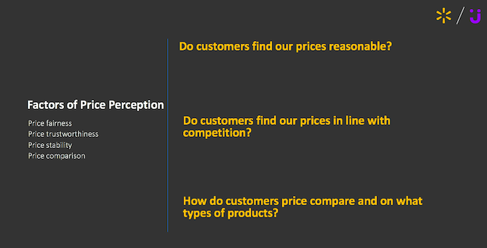

There were several academic papers that I used to baseline my approach. One that stood out in particular was a paper by Xia et al 2004 that talked about the concept of price fairness. The paper lays out several theoretical requirements for price fairness, but what I found most interesting and relevant were the tangible propositions and recommendations on pricing based on the model proposed. The authors spent a significant amount of time on social comparison behavior and its impact on perceived price fairness . While there is no easy way to measure these effects, being aware of those influences made it easier to look at related measurable effects.
Another area of research that I explored was how users see dynamic pricing for e-commerce. One major factor of price perception in this realm is the fact that prices are prone to fluctuate based on a variety of factors, including competitor price. As a result, a case of LaCroix could change by at least a dollar from one visit to the next. This is directly at odds with users' mental models of shopping from groceries. There is little expectation that a gallon of milk could change price significantly at the same store only to go back down on a later visit. For all the possible economic advantages of dynamic pricing to be "real time competitive", we had gotten customer feedback about unpleasant interaction with our dynamic pricing algorithm, including the frustrating experience of having an item change price while in the user's cart. A paper by Garbarino et al 2003 confirmed our concerns, finding that if customers knew that dynamic pricing was being used in pricing, trust with the retailer was significantly lower. This finding was consistent with the customer feedback we received and informed several follow-on features to our dynamic pricing algorithm customer interactions.